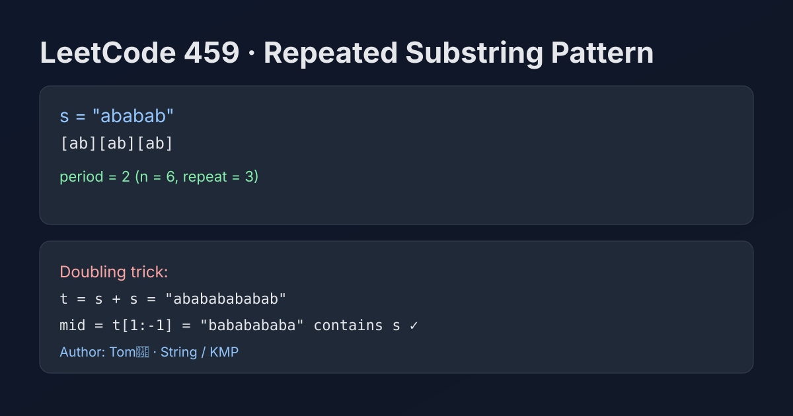

LeetCode 459: Repeated Substring Pattern (String Doubling Trick + KMP Border Check)
LeetCode 459StringKMPToday we solve LeetCode 459 - Repeated Substring Pattern.
Source: https://leetcode.com/problems/repeated-substring-pattern/

English
Problem Summary
Given a non-empty string s, determine whether it can be built by repeating one of its non-empty proper substrings multiple times.
Key Insight
If s is periodic, then s must appear inside (s + s) after removing the first and last characters. This is the classic string-doubling trick.
Equivalent KMP view: let lps = pi[n-1] be the longest proper prefix that is also suffix. If lps > 0 and n % (n - lps) == 0, then s is made of repeated blocks.
Algorithm Steps
1) Let t = s + s.
2) Remove the first and last char of t, call it mid.
3) If mid contains s, return true; else false.
Alternative KMP check uses prefix-function in O(n) as well.
Complexity Analysis
Time: O(n) average with modern substring search (or strict O(n) with KMP).
Space: O(n) for doubled string / prefix array.
Common Pitfalls
- Forgetting to exclude full-string repetition by trimming first/last char in doubling trick.
- Incorrectly using empty substring as a valid repeating unit.
- KMP condition missing divisibility check n % (n - lps) == 0.
Reference Implementations (Java / Go / C++ / Python / JavaScript)
class Solution {
public boolean repeatedSubstringPattern(String s) {
String doubled = s + s;
String mid = doubled.substring(1, doubled.length() - 1);
return mid.contains(s);
}
}import "strings"
func repeatedSubstringPattern(s string) bool {
doubled := s + s
mid := doubled[1 : len(doubled)-1]
return strings.Contains(mid, s)
}class Solution {
public:
bool repeatedSubstringPattern(string s) {
string doubled = s + s;
string mid = doubled.substr(1, doubled.size() - 2);
return mid.find(s) != string::npos;
}
};class Solution:
def repeatedSubstringPattern(self, s: str) -> bool:
doubled = s + s
mid = doubled[1:-1]
return s in mid/**
* @param {string} s
* @return {boolean}
*/
var repeatedSubstringPattern = function(s) {
const doubled = s + s;
const mid = doubled.slice(1, doubled.length - 1);
return mid.includes(s);
};中文
题目概述
给定非空字符串 s，判断它是否能由某个非空真子串重复多次构成。
核心思路
若 s 具有周期性，那么把它翻倍得到 s + s 后，去掉首尾字符，原串 s 仍会出现在中间，这就是经典的“翻倍字符串”判定法。
KMP 等价条件：设 lps = pi[n-1]（最长相等前后缀长度），若 lps > 0 且 n % (n - lps) == 0，则存在重复子串模式。
算法步骤
1）构造 t = s + s。
2）取中间串 mid = t[1 : len(t)-1]。
3）若 mid 包含 s，返回 true，否则返回 false。
若希望严格线性匹配，也可用 KMP 前缀函数实现。
复杂度分析
时间复杂度：平均 O(n)（或用 KMP 严格 O(n)）。
空间复杂度：O(n)。
常见陷阱
- 翻倍法忘记去掉首尾字符，会把原串本身匹配进去导致误判。
- 把空串当作重复单元（不合法）。
- KMP 判定只看 lps > 0 而漏掉整除条件。
多语言参考实现（Java / Go / C++ / Python / JavaScript）
class Solution {
public boolean repeatedSubstringPattern(String s) {
String doubled = s + s;
String mid = doubled.substring(1, doubled.length() - 1);
return mid.contains(s);
}
}import "strings"
func repeatedSubstringPattern(s string) bool {
doubled := s + s
mid := doubled[1 : len(doubled)-1]
return strings.Contains(mid, s)
}class Solution {
public:
bool repeatedSubstringPattern(string s) {
string doubled = s + s;
string mid = doubled.substr(1, doubled.size() - 2);
return mid.find(s) != string::npos;
}
};class Solution:
def repeatedSubstringPattern(self, s: str) -> bool:
doubled = s + s
mid = doubled[1:-1]
return s in mid/**
* @param {string} s
* @return {boolean}
*/
var repeatedSubstringPattern = function(s) {
const doubled = s + s;
const mid = doubled.slice(1, doubled.length - 1);
return mid.includes(s);
};
Comments